Original
Sans fond, couleurs directes. La reference.
transparent
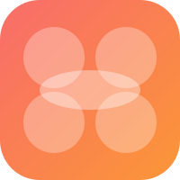
Gradient
Cercles blancs sur fond coral-orange.
app icon
Navy
Cercles colores sur fond sombre. Elegant, premium.
dark mode
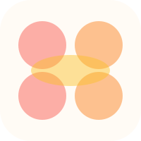
Surface
Cercles colores sur fond chaud #FFFBF5.
light mode
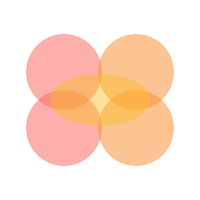
Tight
Cercles rapproches, forte superposition. Compact, dense.
serre
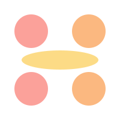
Loose
Cercles ecartes, ellipse fine. Aere, respire.
espace
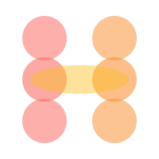
6 Circles
3 cercles par colonne. H plus grand, plus vertical.
3+3
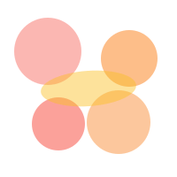
Asymmetric
Tailles variees, positions decalees. Organique, vivant.
organique
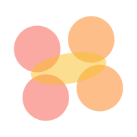
Tilted
Composition pivotee de -10°. Dynamique, ludique.
rotation
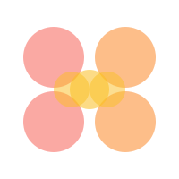
All Dots
Barre = 3 cercles au lieu d'une ellipse. 100% rond.
circles only
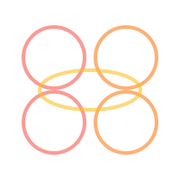
Outline
Contours uniquement, pas de remplissage. Aerien, fin.
stroke
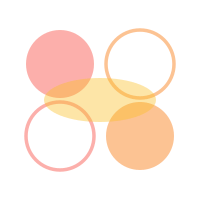
Mixed
Diagonale remplie / diagonale contour. Rythme visuel.
fill + stroke
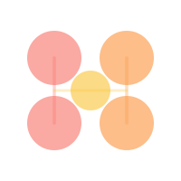
Molecular
Lignes de liaison entre les cercles + dot central. Chimie sociale.
liens